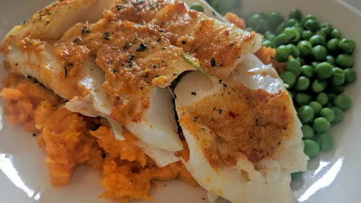

Moroccan spiced fish with ginger mash
30 mins
Serves 2
Gluten Free

Spice up white fish fillets with a flavoured butter and serve with fluffy sweet potato mash.
Ingredients
- 2 large sweet potatoes, peeled and cut into chunks
- 2 tsp butter, softened
- 1 clove garlic, crushed
- 0.5-1 tsp harissa
- zest 1 lemon
- small handful coriander, most chopped, rest left whole
- fingertip-size piece fresh root ginger, finely grated
- 2 skinless white fish fillets
Instructions
- Heat oven to 180°C/Gas 6. Cook the
sweet potatoes2 large
in boiling, salted water for about 10 mins or until just tender when pierced with a knife.
- Meanwhile, mix together the
butter2 tsp
with the garlic1 clove
, harissa0.5-1 tsp
, lemon zest, chopped coriandersmall handful
and some seasoning. When the potatoes are ready, drain thoroughly, mash with the gingerfingertip-size piece
and seasoning, then keep warm.
- Place the
fish2
in a roasting tin, season, then spread half the flavoured butter2 tsp
over each fillet. Roast for about 8 mins until just cooked through. Serve with the gingerfingertip-size piece
mash and some green veg.
-
kcal
445
-
fat
7 g
-
saturates
3 g
-
carbs
65 g
-
sugar
17 g
-
fibre
0 g
-
protein
36 g
-
salt
0.67 g
www.bbcgoodfood.com
Short Link
Long Link